Restore
To honour what has survived: stone, timber, patina, memory and the marks of use.
Stories from the cottage
Notes on art, home, food, memory and making a life from what is already here.
Restore & Transform
Our cottage is not a finished project. It is a living, breathing transformation.
Y Bwthyn is being restored slowly: room by room, object by object, layer by layer. The journey holds the same spirit that runs through Bobbi’s art, food and teaching: attention to what already exists, respect for weathered materials and a willingness to let repair remain visible.
This is where the Wabi Sabi foundation of Bobbi’s creativity becomes tangible. Beauty is found in the worn threshold, the uneven surface, the rescued fragment and the patient work of making a place feel more fully itself.

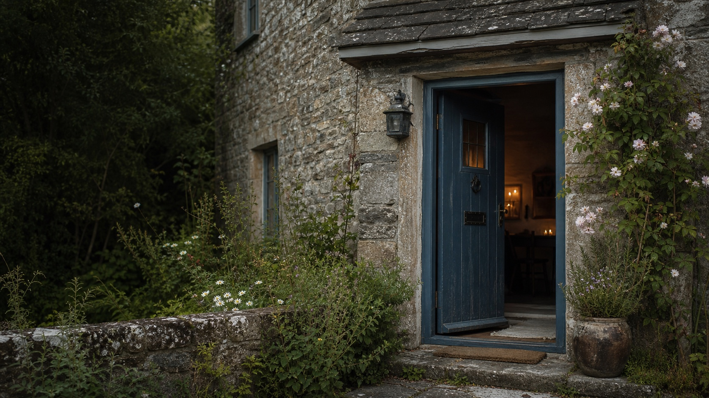
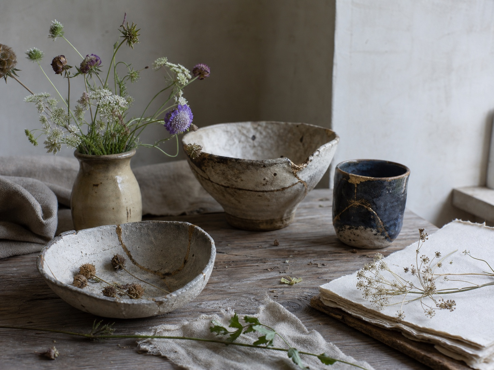
To honour what has survived: stone, timber, patina, memory and the marks of use.
To let neglected corners become warm, useful and soulful without erasing their history.
To find beauty in imperfection, age, repair and the quiet evidence of time.
Current project
The current restoration project at Y Bwthyn is the old slated garden wall: learning new skills, using lime mortar for repairing and repointing, and working in sympathy with traditional building techniques and the preservation of heritage buildings.
At some point in the past, parts of the wall were badly restored with concrete and cement, a no-no for listed or old properties. This work is about gently undoing that damage, letting the wall breathe again and keeping its history visible.
The project will also feed into future workshops around repair, transformation, rescued materials and the Wabi Sabi practice of finding beauty in weathered, imperfect things.
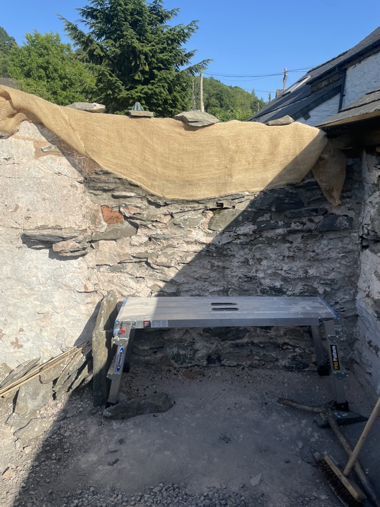
The old slated garden wall protected under hessian while careful repair work begins.
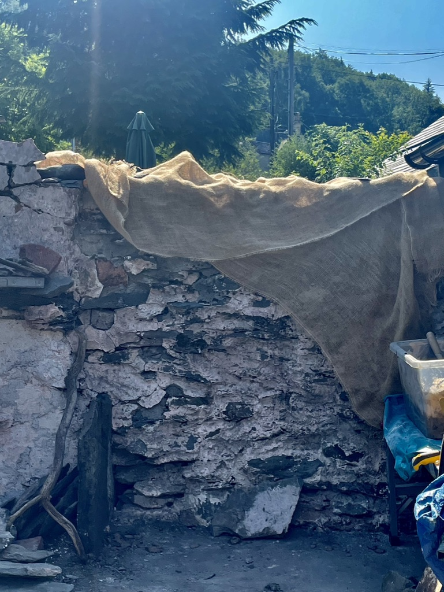
Hessian helps slow the drying process while lime mortar cures.
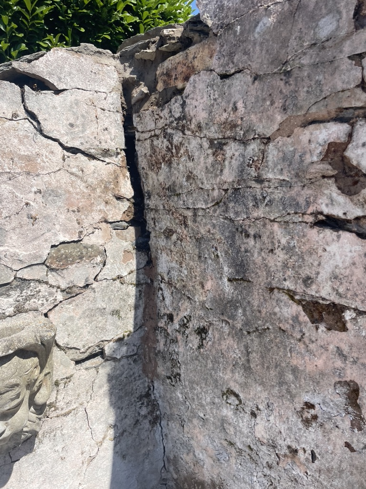
Previous cement repairs left hard, cracked areas that need careful attention.
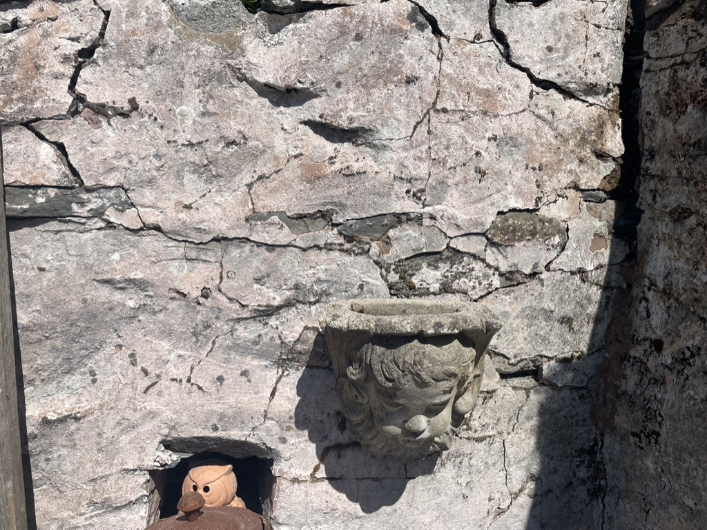
The wall's scars show where inappropriate repairs have stressed the old fabric.
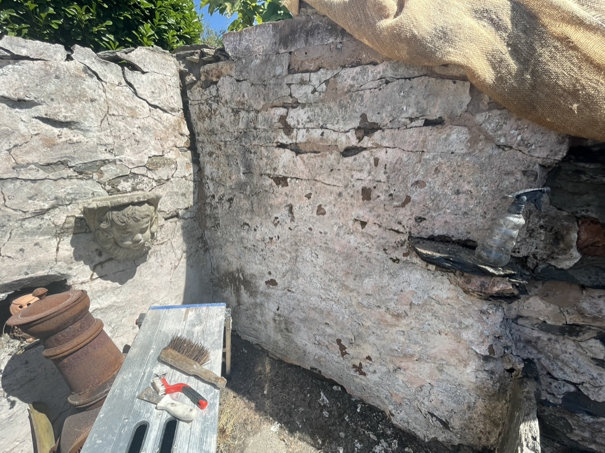
Repairing and repointing begins slowly, with small tools and steady attention.
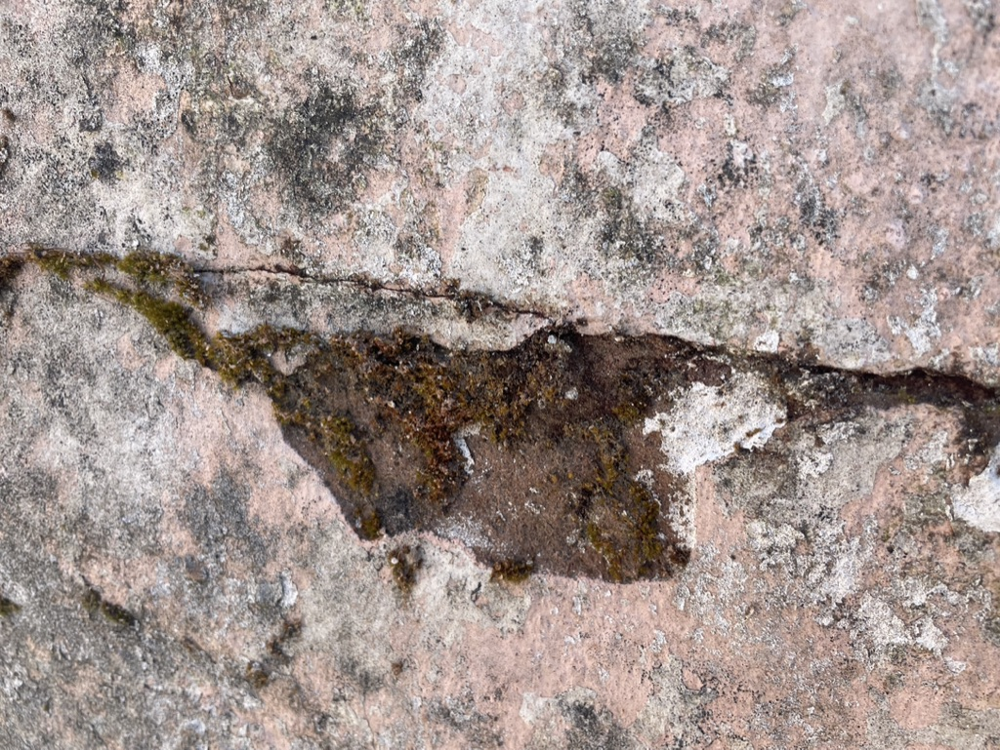
Close inspection reveals moss, cracks and the older material beneath.
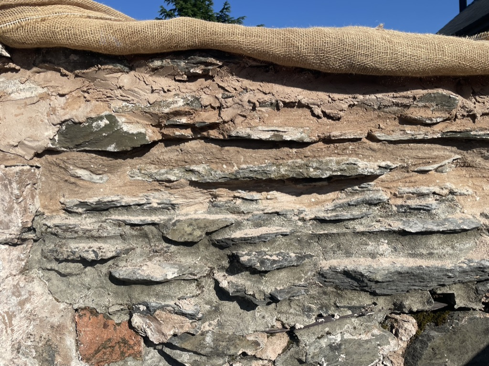
Thin slate courses are repaired in sympathy with traditional building methods.
Latest notes
A growing collection of stories from Bobbi’s studio, kitchen, garden and creative practice.
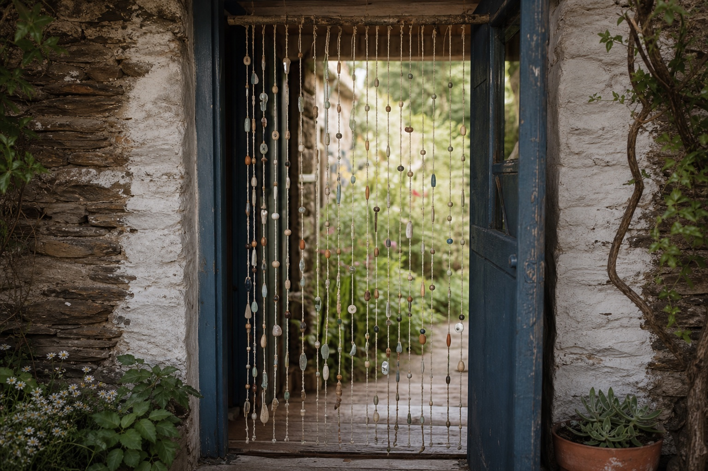
The search for a beautiful doorway screen and the beginning of a new idea.
Read more
Home, longing, memory and the emotional pull of belonging.
Read moreHow sculpture, ceramics and teaching shaped Bobbi’s eye.
Read more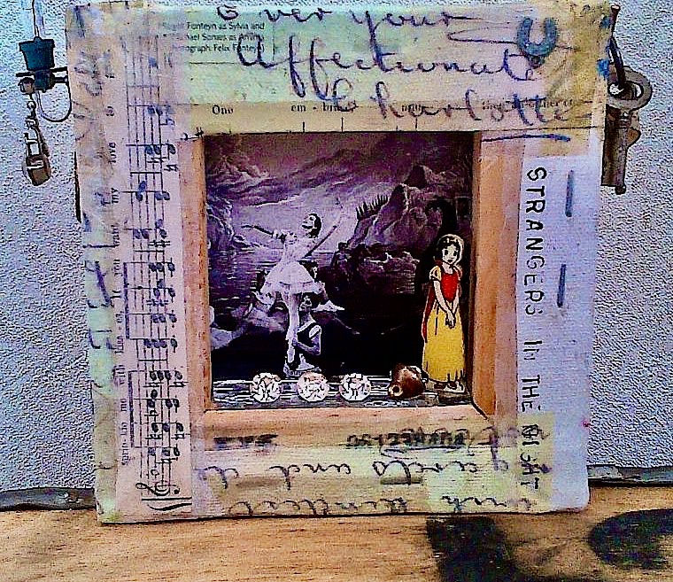
A miniature assemblage made from family ephemera, decoupage and a Snow White keepsake from a sideboard drawer.
Read more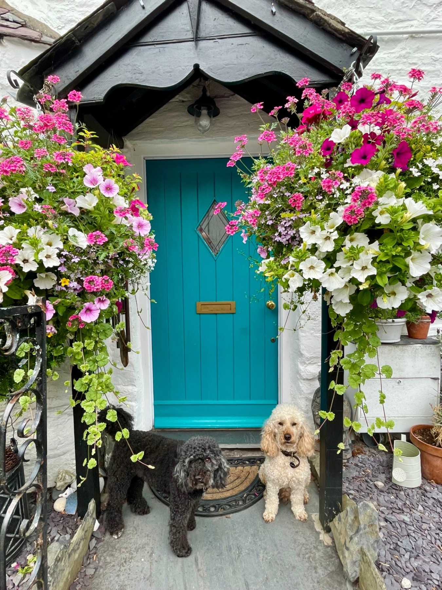
The blue door in summer: baskets, supper at the table and Stan and Alfie keeping watch.
Read more